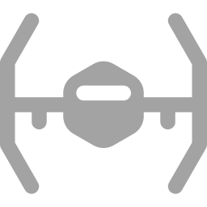
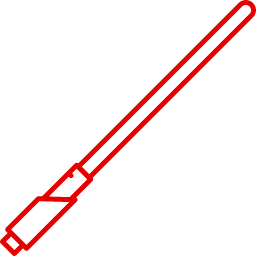

História
O lado sombrio da Força, também conhecido como lado negro da Força[1], chamado de Bogan ou de Boga pelos antigos Jedi, era o instrumento principal dos Lordes Sith, e o maior inimigo da Ordem Jedi. Oposto ao lado luminoso da Força, seu poder vinha das emoções negativas e fortes. Era associado com morte e destruição. O lado sombrio da Força seduziu muitos Jedi, como Anakin Skywalker, que passou a ser conhecido como Darth Vader, e Jacen Solo, que passou a ser conhecido como Darth Caedus. O Lado sombrio é temido pelos Jedi desde tempos remotos. Os padawans são sempre alertados pelos seus Mestres de que eles devem evitar os sentimentos sombrios, como raiva, medo, frustração, inveja e principalmente (o sentimento que é tido como o "combustível" de quem é adepto ao lado sombrio) o ódio. Muito frequentemente, os Sith tentam seduzir os Jedi com menos experiência porém com grande potencial para o lado sombrio. Alguns poderes do lado sombrio têm caráter sobrenatural.

Naves
A nave de um único assento e de curta distancia não tem um hyperdrive, e como tal exige ser descarregada de bases de lançamento e naves de grande porte. Apresenta dois canhões laser de fogo-ligado no queixo da cabina do piloto em forma de bola.

Sabres
O Sabre pode cortar quase qualquer coisa, com a exceção de outro Sabre de Luz. As cores dos sabres vermelhos eram originados dos cristais sintéticos dos Sith, por não terem acesso à caverna de cristais em Ilum.

Armas
É uma gigantesca estação espacial esférica, com 140 km de diâmetro. Carrega milhares de soldados (stormtroopers), caças TIE e caças TIE avançados como o de Darth Vader, mas sua arma maior é o superlaser que possui um formato de uma gigantesca cratera, que causa a destruição total de planetas.